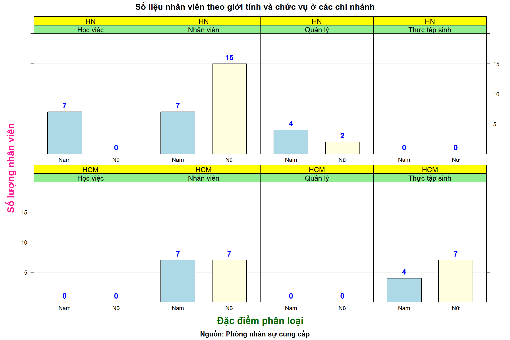

Họ Tên Chức vụ Chi nhánh Giới tính Ngày vào làm Lương Tuổi Doanh thu bán hàng
1 Nguyễn Diệp Hạnh Nhân viên HN Nữ 2022-02-04 1.7e+07 42 2.682e+09
2 Trần Nam Tuấn Quản lý HN Nam 2020-12-03 2.5e+07 28 1.994e+09
3 Hoàng Ngọc Liên Thực tập sinh HCM Nam 2022-06-16 1.7e+07 20 2.178e+07
4 Nguyễn Thị Kim Mai Nhân viên HN Nữ 2021-11-27 2.5e+07 53 9.510e+08
5 Phạm Hồng Thúy Học việc HN Nam 2022-03-11 7.0e+06 52 2.570e+07
6 Vũ Việt Thư Thực tập sinh HCM Nữ 2022-05-13 1.5e+07 35 1.833e+07
7 Phạm Ngọc Trí Nhân viên HCM Nữ 2022-05-14 1.7e+07 36 2.826e+09
8 Đào Minh Hạnh Nhân viên HN Nữ 2021-09-16 2.5e+07 28 1.903e+09
9 Đỗ Minh Hưng Học việc HN Nam 2021-11-11 5.0e+06 19 1.443e+07
10 Lê Phương Liên Thực tập sinh HCM Nữ 2021-11-12 1.7e+07 26 8.790e+05
11 Nguyễn Anh Liên Nhân viên HCM Nữ 2021-11-13 1.5e+07 52 2.181e+09
12 Nguyễn Hoàng Ngọc Nhân viên HN Nam 2021-11-14 1.7e+07 25 2.659e+09
13 Trần Minh Nam Nhân viên HCM Nam 2021-11-15 1.5e+07 29 7.840e+08
14 Phạm Hồng Hà Nhân viên HN Nữ 2022-02-04 1.7e+07 22 2.764e+09
15 Vũ Việt Hà Nhân viên HCM Nam 2020-12-03 3.0e+07 35 3.950e+08
16 Trần Ngọc Thúy Nhân viên HN Nữ 2022-06-16 1.5e+07 38 2.202e+09
17 Trịnh Minh Hảo Quản lý HN Nữ 2021-11-27 5.0e+07 43 2.180e+08
18 Lê Minh Trí Nhân viên HCM Nam 2022-03-11 1.5e+07 34 1.587e+09
19 Đinh Quốc Trung Nhân viên HN Nam 2022-05-13 1.7e+07 46 2.869e+09
20 Vũ Quang Vinh Nhân viên HN Nam 2022-05-14 7.0e+06 26 1.271e+09
21 Trần Nam Thịnh Quản lý HN Nam 2021-09-16 1.5e+07 32 2.191e+09
22 Hoàng Thắng Thực tập sinh HCM Nam 2022-06-16 1.7e+07 24 7.350e+07
23 Nguyễn Thị Kim Xuân Nhân viên HN Nữ 2021-11-27 1.5e+07 48 2.980e+09
24 Phạm Hồng Thúy Học việc HN Nam 2021-11-27 1.1e+07 42 1.398e+07
25 Phạm Việt Thư Thực tập sinh HCM Nữ 2022-03-11 1.7e+07 52 1.989e+08
26 Trần Ngọc Phước Nhân viên HCM Nữ 2022-05-13 1.5e+07 54 2.749e+09
27 Nguyễn Thị Minh Hạnh Nhân viên HN Nữ 2022-05-14 1.5e+07 39 1.439e+09
28 Đỗ Quốc Mạnh Học việc HN Nam 2021-09-16 1.0e+07 38 9.530e+05
29 Lê Phương Liên Thực tập sinh HCM Nữ 2021-11-11 1.5e+07 47 2.998e+07
30 Nguyễn Anh Liên Nhân viên HCM Nữ 2021-11-12 1.7e+07 38 1.034e+09
31 Nguyễn Hoàng Mai Nhân viên HN Nam 2021-11-14 1.7e+07 52 1.238e+09
32 Nguyễn Kim Tuyền Nhân viên HCM Nam 2021-11-15 1.5e+07 27 2.176e+09
33 Phạm Hồng Linh Nhân viên HN Nữ 2021-11-16 7.0e+06 55 2.614e+09
34 Trần Nam Hưng Quản lý HN Nam 2020-12-03 1.5e+07 19 2.587e+09
35 Nguyễn Thị Liên Thực tập sinh HCM Nam 2022-06-16 1.7e+07 36 1.001e+07
36 Nguyễn Kim Thanh Nhân viên HN Nữ 2021-11-27 1.5e+07 54 1.870e+09
37 Phạm Hồng Thúy Học việc HN Nam 2022-03-11 8.0e+06 33 1.039e+07
38 Vũ Việt Thanh Thực tập sinh HCM Nữ 2022-05-13 1.7e+07 23 1.906e+08
39 Trần Trí Nhân viên HCM Nữ 2022-05-14 1.5e+07 38 1.088e+09
40 Trần Đanh Thủy Nhân viên HN Nữ 2022-05-13 1.5e+07 54 2.933e+09
41 Nguyễn Quốc Hưng Học việc HN Nam 2022-05-14 7.0e+06 50 2.802e+06
42 Lê Phương Liên Thực tập sinh HCM Nữ 2021-09-16 1.7e+07 45 1.421e+08
43 Nguyễn Anh Liên Nhân viên HCM Nữ 2021-09-16 1.5e+07 50 2.535e+09
44 Nguyễn Mai Nhân viên HN Nam 2021-11-14 1.7e+07 41 8.090e+08
45 Nguyễn Thị Kim Quỳnh Nhân viên HCM Nam 2021-11-15 2.5e+07 48 1.326e+09
46 Phạm Hồng Hà Nhân viên HN Nữ 2021-11-16 2.0e+07 29 1.118e+09
47 Vũ Việt Hà Nhân viên HCM Nam 2021-11-17 1.5e+07 31 1.152e+09
48 Trần Ngọc Thúy Nhân viên HN Nữ 2021-09-16 7.0e+06 45 3.900e+08
49 Trịnh Minh Thư Quản lý HN Nữ 2021-11-11 1.5e+07 28 1.328e+09
50 Lê Trần Khương Nhân viên HCM Nam 2021-11-12 1.7e+07 41 1.313e+09
51 Trần Quốc Trung Nhân viên HN Nam 2021-11-14 1.5e+07 21 8.310e+08
52 Vũ Quang Vinh Nhân viên HN Nam 2021-11-15 1.5e+07 44 2.570e+09
53 Trần Nam Hưng Quản lý HN Nam 2021-11-16 1.7e+07 52 9.730e+08
54 Trần Minh Tâm Thực tập sinh HCM Nam 2020-12-03 1.5e+07 28 1.838e+09
55 Phạm Thị Kim Trí Nhân viên HN Nữ 2021-11-27 1.7e+07 43 1.732e+09
56 Phạm Trần Thúy Học việc HN Nam 2022-03-11 9.0e+06 48 2.074e+07
57 Vũ Việt Thủy Thực tập sinh HCM Nữ 2022-05-13 1.7e+07 44 1.495e+08
58 Trần Ngọc Trí Nhân viên HCM Nữ 2022-05-14 2.5e+07 47 8.720e+08
59 Đào Minh Hạnh Nhân viên HN Nữ 2021-09-16 1.7e+07 53 8.070e+08
60 Đào Đình Binh Nhân viên HN Nữ 2021-09-16 2.5e+07 29 2.687e+09
Số liệu nhân viên theo giới tính và chức vụ ở các chi nhánh
gioi_tinh chuc_vu chi_nhanh count
1 Nam Học việc HCM 0
2 Nữ Học việc HCM 0
3 Nam Nhân viên HCM 7
4 Nữ Nhân viên HCM 7
5 Nam Quản lý HCM 0
6 Nữ Quản lý HCM 0
7 Nam Thực tập sinh HCM 4
8 Nữ Thực tập sinh HCM 7
9 Nam Học việc HN 7
10 Nữ Học việc HN 0
11 Nam Nhân viên HN 7
12 Nữ Nhân viên HN 15
13 Nam Quản lý HN 4
14 Nữ Quản lý HN 2
15 Nam Thực tập sinh HN 0
16 Nữ Thực tập sinh HN 0
lattice::barchart(count ~ gioi_tinh | chuc_vu + chi_nhanh, groups = gioi_tinh,data = ok_2,horizontal =FALSE,stack =TRUE,col =c("lightblue", "lightyellow"),## edit xy axisscales =list(axs ="i",draw =TRUE,x =list(relation ="free"), # relation = free | samey =list(relation ="same",limits =c(0, 20)) ),## axis label and titlexlab =list(label ="Đặc điểm phân loại", fontsize =16, col ="darkgreen", font =2),ylab =list(label ="Số lượng nhân viên", fontsize =16, col ="#FF1694", font =2),main ="Số liệu nhân viên theo giới tính và chức vụ ở các chi nhánh",sub ="Nguồn: Phòng nhân sự cung cấp",## value above barpar.settings =list(strip.background =list(col =c("lightgreen", "yellow"))),panel =function(x, y, subscripts, ...){panel.grid(h =-1,v =0)panel.barchart(x, y, subscripts = subscripts,...) t <-aggregate(y ~ x, data.frame(x, y), FUN = sum)panel.text(t$x, t$y, labels = t$y, pos =3, col ="blue",fontsize =13,font =2 ) } )

Doanh số theo chi nhánh ở các độ tuổi khác nhau
df$doanh_so <- df$`Doanh thu bán hàng`/1000000xyplot(doanh_so ~`Tuổi`|`Chức vụ`+`Chi nhánh` , data = df,groups =`Giới tính`,# layout = c(1, 2), # thay đổi vị trí các panel conpch =19,col =c("red", "blue"),key =list (space ="top", column =2,text =list(c("Nam", "Nữ")),points =list(pch =c(19, 19),col =c("red", "blue")) ),## axis label and titlexlab =list(label ="Tuổi", fontsize =16, col ="darkgreen", font =2),ylab =list(label ="Doanh số (triệu VNĐ)", fontsize =16, col ="#FF1694", font =2),main ="Doanh số theo chi nhánh ở các độ tuổi khác nhau",sub ="Nguồn: Phòng nhân sự cung cấp",scales =list(axs ="i",draw =TRUE,x =list(relation ="free", # relation = free | samelimits =c(0, 100)), y =list(relation ="same",limits =c(-300, 3500) ) ),## value above barpar.settings =list(strip.background =list(col =c("lightgreen", "yellow"))),type =c("g", "p") ## "g"rid and "p"oints )